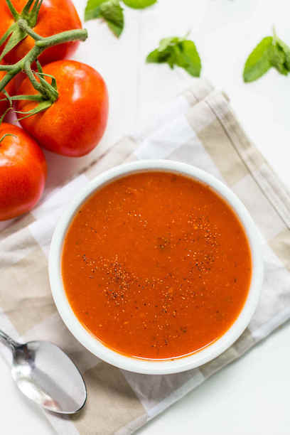

Tomato Soup

Description
A quick, easy, and tasty tomato soup recipe
Ingredients
- 4 cups chopped fresh tomatoes
- 1 slice onion
- 4 cloves garlic
- 2 cups chicken broth
- 2 tablespoons butter
- 2 tablespoons all-purpose flour
- 1 teaspoon salt
- 2 teaspoons white sugar, or to taste
Steps
- In a stockpot, over medium heat, combine the tomatoes, large slice of onion, garlic cloves, and chicken broth. Bring to a boil, and gently boil for about 20 minutes to blend all of the flavors. Remove from heat and run the mixture through a food mill into a large bowl, or pan. You can also use a food processor if you prefer. Discard any stuff left over in the food mill/food processor.
- In the now empty stockpot, melt the butter over medium heat. Stir in the flour to make a roux, cooking until the roux is a medium brown. Gradually whisk in a bit of the tomato mixture, so that no lumps form, then stir in the rest. Season with sugar and salt, and adjust to taste.